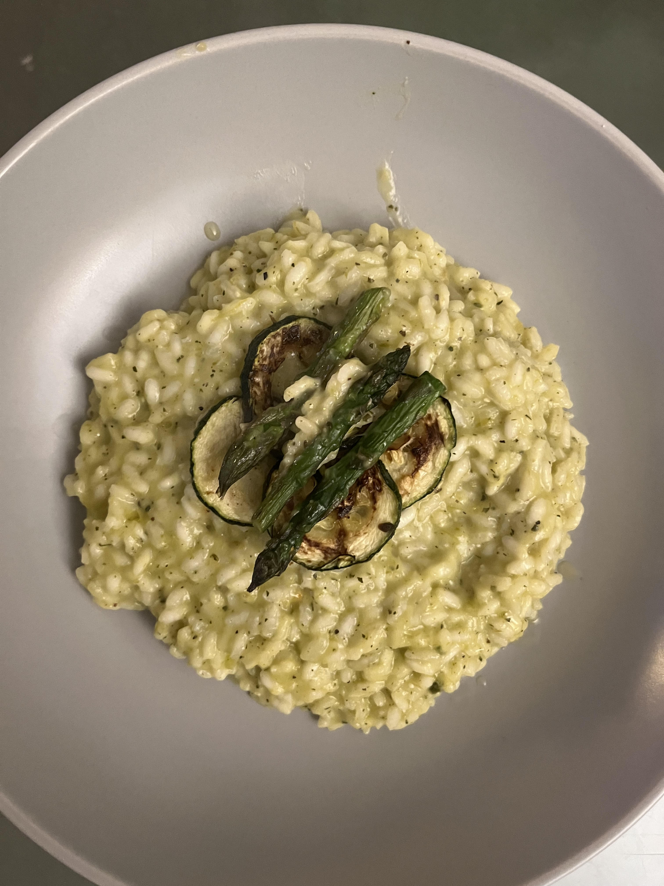

Asparagus Risotto

This delicious and simple asparagus rissotto topped with goats cheese and courgette is the perfect partner for a cozy night in
I hate it when recipe sites have paragraphs of text before actually getting into a recipe so lets just jump right on in.
Ingredients
- Asparagus tips
- pack of courgettes
- 1 cup risotto rice
- veg stock cube
- goats cheeese
- gran pedano
- salt and pepper for seasoning
Steps
- Preheat oven to 200 degrees celcius and pre heat baking tray
- chop courgette and place asparagus and courgette into oven and roast for 20mins
- Blits roasted asparagus and courgette while leaving a handful aside for topping at the end
- Heat olive oil in a frying pan over medium heat and add risotto rice, cook for 1 min
- Make 1/2 litre of stock with stockcube
- With the risotto over a medium heat, start to add the stock and blended green veg mix bit by bit and continually stir. You should only be adding spoonfulls of each when the rice has absorbed the liquid and is starting to dry out.
- Repeat this process for 30mins or until rice is soft/aldente. Make sure to continually stiry and dont let pan come to boil.
- Once rice is cooked, stir in a good helping of Gran Padano into rice to taste.
- Serve into bowl and top with crumbled goats cheese and leftover asparagus and courgette
- Enjoy. :)